Sergeeva Anastasiia
QA Manager / QA lead at ABBYY
QA Mentor at Yandex.Practicum
email: olebbj@gmail.com
phone: +36 203 861 493
location: Hungary, Budapest
About
I have been working in QA since 2013. I have experience with e-commerce (e-trade), AI, ML, education projects, products with a high level of secrecy, etc. Furthermore, I'm testing web, mobile (a little), client-server, on-prem, cloud applications. I work with layout, API (Rest and SOAP), console/command line, SQL (MySQL, PSQL, YQL), automatization (JS, Python, a little), Charles (Proxyman, etc.), DB (Postgres, MongoDB, etc.), performance testing (jMeter, a little). I know test-design, test-analysis and use this in my work. Likewise, I’m writing test plans, test strategy, test cases, checklists, mind map, block-schemes, etc. I conduct demo and acceptance tests for teams and customers.
Also, I co-author and mentor QA course in Yandex, where we teach people without IT background to be QA junior. And I know what I need to do to my team that they will be better in QA.
For all my work experience, I have not stopped working with my hands (70-80% of the time)
Education
Perm State Technical University (PSTU) Master's degree |
2018 - 2020 |
Perm State Technical University (PSTU) Bachelor degree |
2009 - 2013 |
Experience
QA
|
Test Manager / QA Team lead |
2020 - present |
|
QA Engineer |
2017 - 2020 |
|
QA Engineer |
2015 - 2017 |
|
Test engineer |
2013 - 2015 |
Education in QA
|
QA Mentor |
2019 - present |
|
QA Course Author |
2019 - 2021 |
|
Author and lecturer of the QA course |
2020 |
Perm National Research Polytechnic University Author and lecturer of the QA course |
2019 |
ITPeople (non-profit organization) Author and lecturer of the QA course |
2018 |
|
Author and lecturer of the QA course for yandex-assessor |
2018 |
|
Author and lecturer of the QA course |
2017 |
Other
Private professional educational institution "Financial and economic College" Temporary teacher of mathematics and computer science |
2015 |
Perm regional College of arts and culture | PRCAC Temporary teacher of mathematics and computer science |
2014 |
Skills
Task manager
Web apps
Windows apps
Agile
Scrum
Kanban
Mobile apps
Linux apps
REST API
SOAP API
Swagger
Postman
CURL
SOAP UI
Autotests
codeceptjs
js
Python
Mentor
Planning
Education
Test analysis
Block-scheme
Mindmap
Test design
Check lists
Test cases
Test Plan
HTTP/HTTPS
Devtools
Charles
Android Studio
Logs analysis
DB
SQL
Command line
Grafana
Kibana
jMeter
| 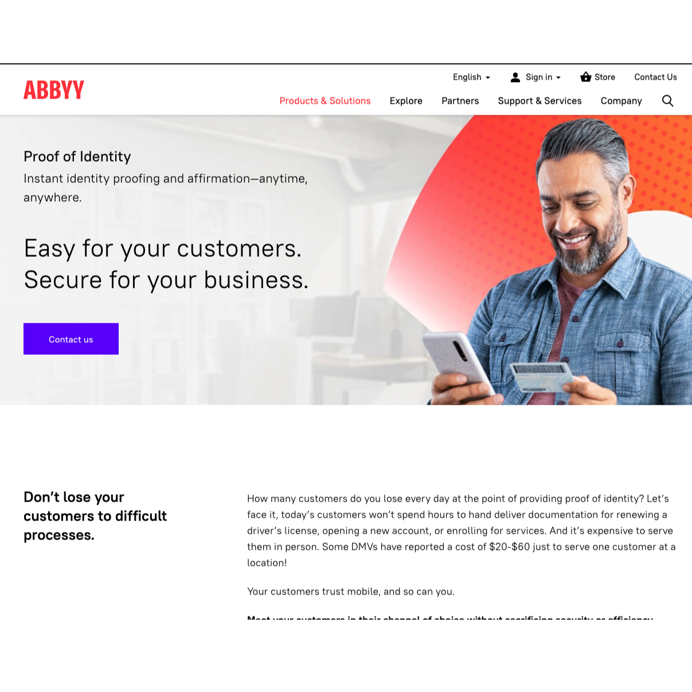 | ABBYY: Proof of Identity
This is a web application that provides a comprehensive solution for verifying the authenticity of documents and identifying end users. Work with the application is carried out in a web application and in a mobile web application. The test documentation was written in the TFS system during the design phase of the test. A set of test mobile devices has been purchased for testing. I thought out a testing strategy, prioritized functionality, studied the system and trained my team to work with this system. I was engaged in testing new features, testing the application, its first release for production. I also started doing load testing (jmeter). I also maintained dashboards for accounting and task allocation in JIRA. Not only that, but I kept track of the tasks that were supposed to be in the release: how many are closed, how many are new, how long tasks hang on the development and testing side. I conducted a demo for new employees, managers, and so on. I fully implemented the testing process for the new product, set up the testing processes. |
| 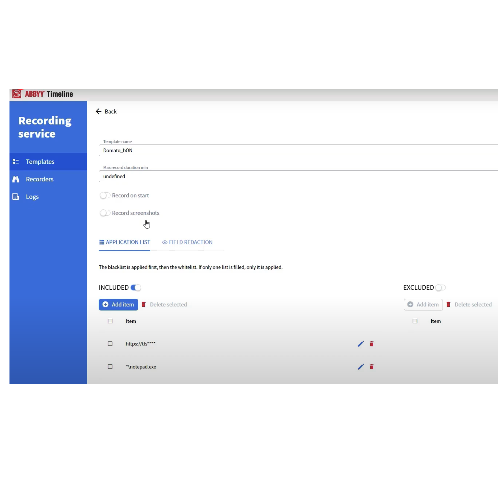 | ABBYY: Task Mining
Task mining have 3 steps: 1. Recording of user interaction data is necessary to collect data on user interaction data (web and windows-applications). 2. Task analysis (e.g., which action is more popular, how much time users spend on this action). 3. Visualizations (in Timeline). Windows app, web-app, integration with Timeline (cloud, on-prem windows and Linux) I acted as a QA manager: I created a team from scratch, trained my team, worked on test development, the release process, test planning, building a testing strategy, etc. As a result, I completely transferred the product to another testing team, which my team and I also trained and supported. My team tested the entire process of the application. I was engaged in release planning, updating test documentation, selecting tools for maintaining test documentation, discussing new features, training the team, and so on. Also planning automation, choosing a framework, selecting test data for full testing of the application. I kept systems of accounting for the distribution of tasks by team, accounting for changes in tasks in the release, accounting for the coverage of functionality by tests. |
| 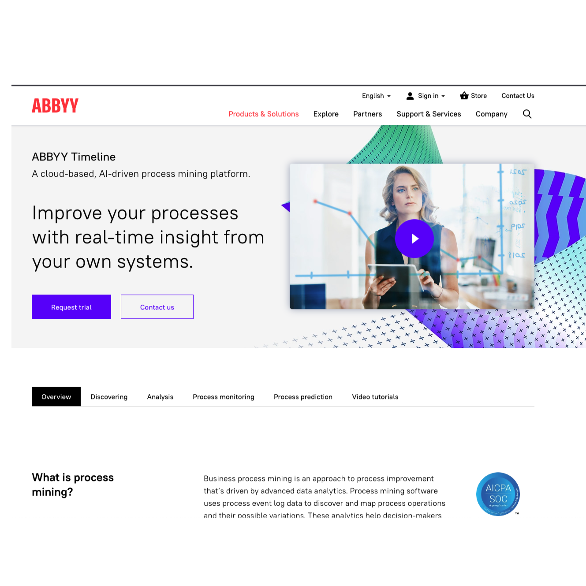 | ABBYY: Timeline
Business process mining. Cloud, windows and linux on-prem applications I acted as QA manager: I created a team from scratch, trained my team, handled test development, release process, test planning, building test strategy, etc. As a result, I completely handed over the product to another testing team, which my team and I also trained and supported. My team tested the entire application process. I was involved in release planning, updating test documentation, selecting test documentation tools, discussing new features, training the team, and so on. Also planning for automation, choosing a framework, selecting test data for full application testing. I maintained systems to keep track of task allocation to teams, keep track of task changes in release, keep track of test coverage of functionality. |
| 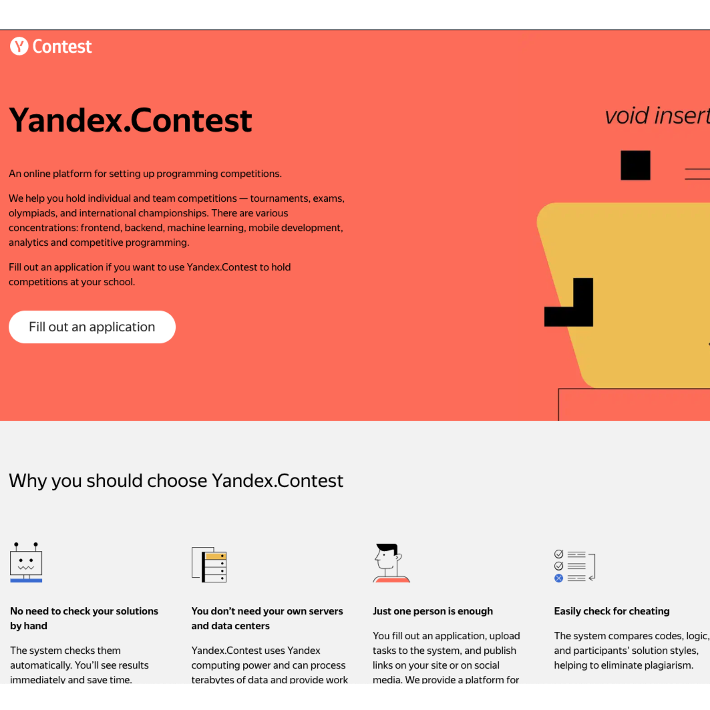 | Yandex.Contest
An online platform for setting up programming competitions. A huge product on the basis of which programming competitions, tournaments, etc. are created. It includes an admin panel where you can configure tasks up to which functions in the code can be used and which ones cannot. Supports all programming languages of almost all versions. Based on this application, regional selections for the ICPC championship or their mirrors were held (for example). I was engaged in manual testing of the application before the redesign, a little after the redesign, maintaining test documentation, communicating with users. I created and set up processes for technical support, participated in training people. Conducted courses for training administrators. I created and set up competitions. Participated in the duty at especially large competitions. |
| 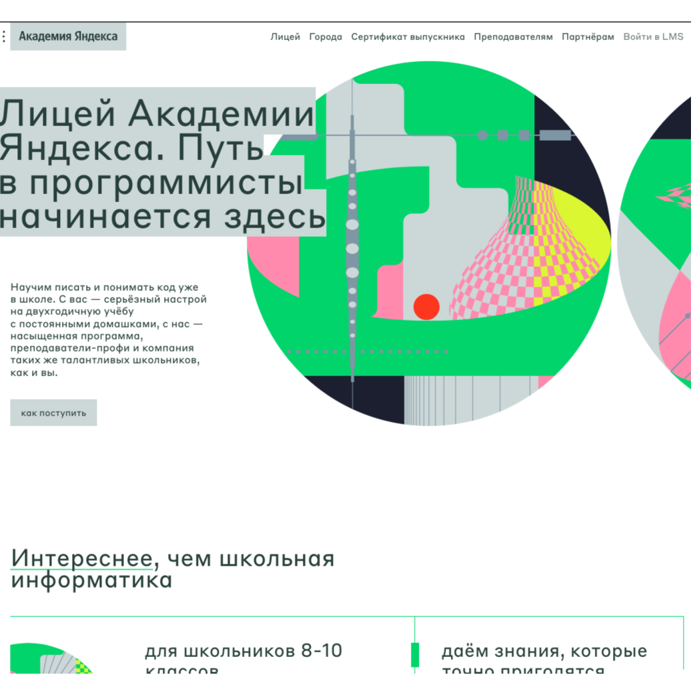 | Yandex.Lyceum
Yandex.Lyceum is a online textbook for python lessons for students in grade 8-10. Teachers in the textbook can create tasks, and students solve them in Python. The tasks are checked in Yandex.Contest. Statistics are also collected, tests are conducted, grades are given, and so on - a complete system for conducting lessons. I fully tested the product, created text documentation, automated regression tests (the release was once a week), communicated with customers. Participated at the very beginning of the project and released the very first versions. I participated in the redesign. And also I tested services for interviews for teachers and students, who will then use this app. I also set up the testing process by assessors from scratch: creating documentation, writing instructions, collecting data, analyzing results, training assessors, budget planning, estimating monetary and time costs. |
| 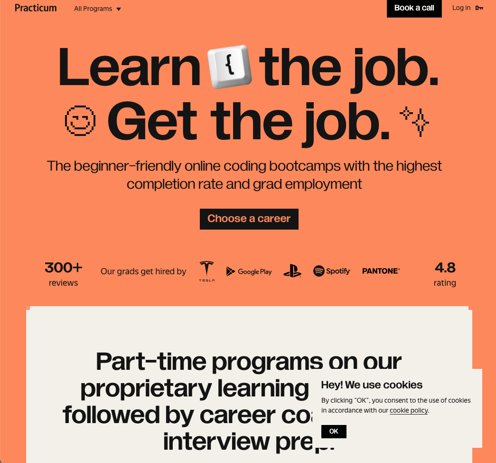 | Yandex.Practicum
Yandex.Practicum is a system for creating and conducting IT courses from Yandex: theory, tasks in programming languages, SQL, connecting to remote servers, submitting projects, tests, etc. I participated in regression tests of the product: creating problems, theory, etc. I worked here for a short time before leaving for ABBYY |
| 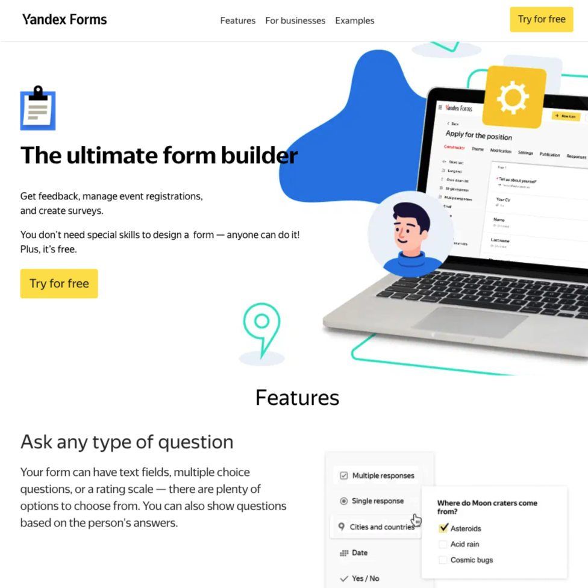 | Yandex.Forms
Yandex.Forms is an application for creating various forms, storing answers, configuring the rules for displaying questions, and obtaining additional data about users. I participated in the first b2b release. I tested everything: creating forms, setting up rules, setting up mailings, collecting data, integration with other Yandex services. |
| 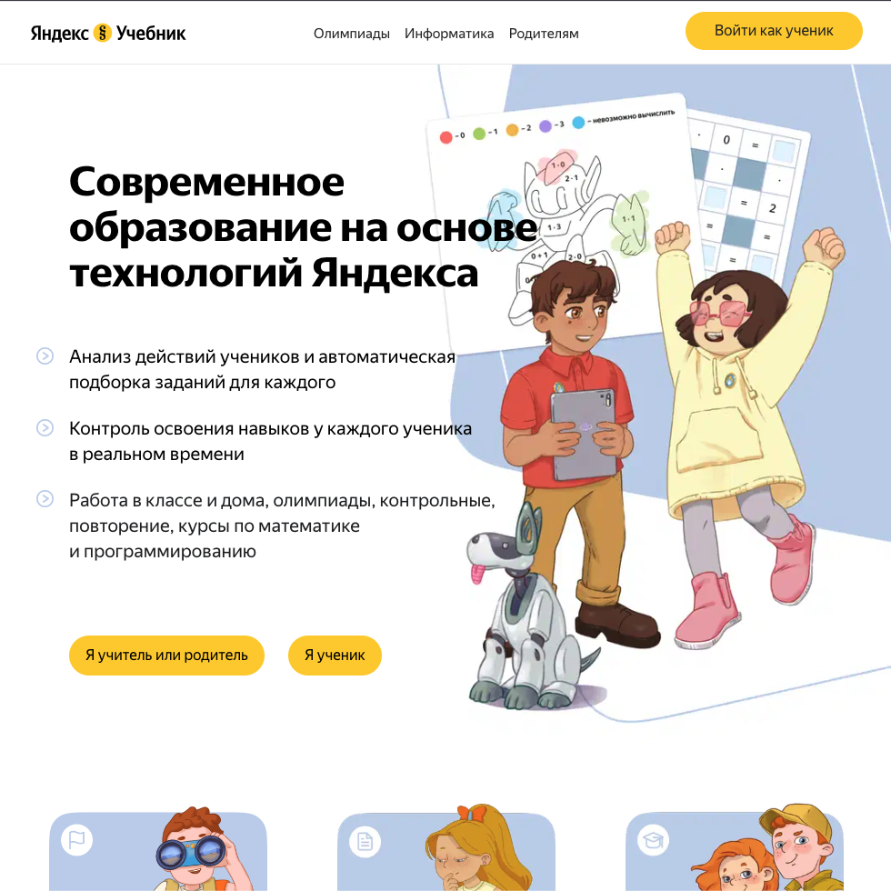 | Yandex.Education
Yandex.Education is a service for creating and conducting lessons for students of grades 1-5. I participated in the first releases of this product: creating lessons, accounts, tests and tasks, conducting lessons, collecting statistics, grading, and so on. I helped in planning the time and budget for assessors. |
| 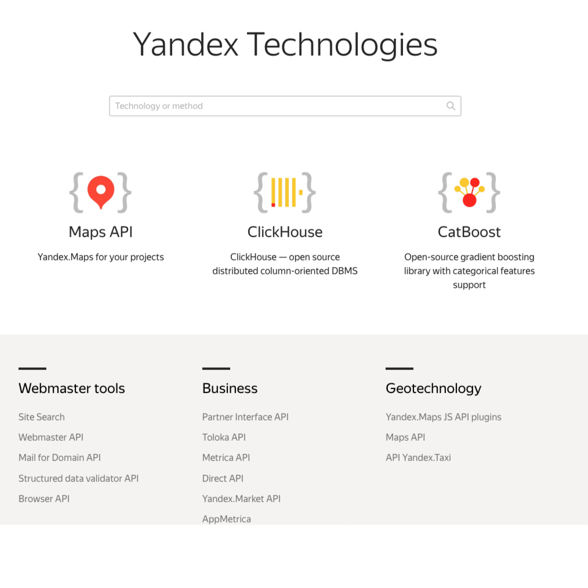 | Yandex Technologies
Yandex Technologies is a service where all information about the Yandex public API is collected. I was testing a web application (web + localisation) after the redesign of the service. I looked through every page, every link. I was compiled test documentation and partially automated testing on javascript and the open source framework Hermione. |
| 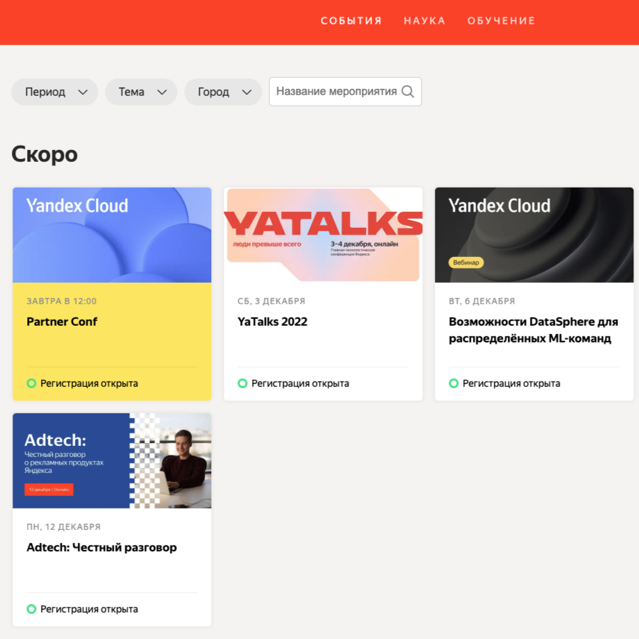 | Yandex Events
Yandex Events is a service where Yandex's representatives can to create information about new event. I was testing the functionality of creating new events, localisation, web after redisign, was created test documentation. |
| 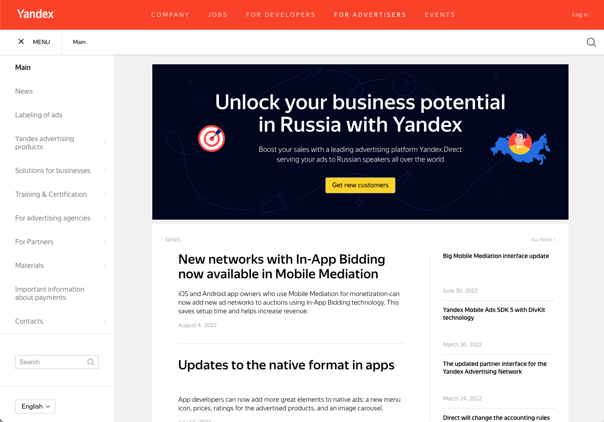 | Advertising on Yandex
Advertising on Yandex is a service where all information about advertising is collected. Including the opportunity to get certificates from an advertising company in Yandex services. I tested the web application, wrote test documentation, etc.. But we also implemented a tool in the certification block that allowed us to record on video how the user takes the exam, whether the user matches on the video and the photo of the document, whether he is talking, does not open the browser, does not write off, and so on. I have also been testing this tool. |
| 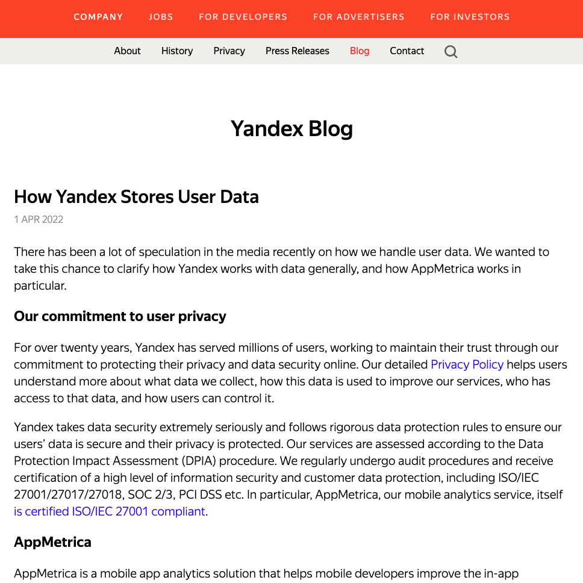 | Yandex blogs and clubs
Yandex Blogs is a service where a page is created for each Yandex technology, news, information, and so on are published. I tested the entire functionality of Yandex blog: from creating a new blog to writing posts, comments, etc. I wrote test documentation, automated particularly boring actions for myself, participated in frequent releases. |
| 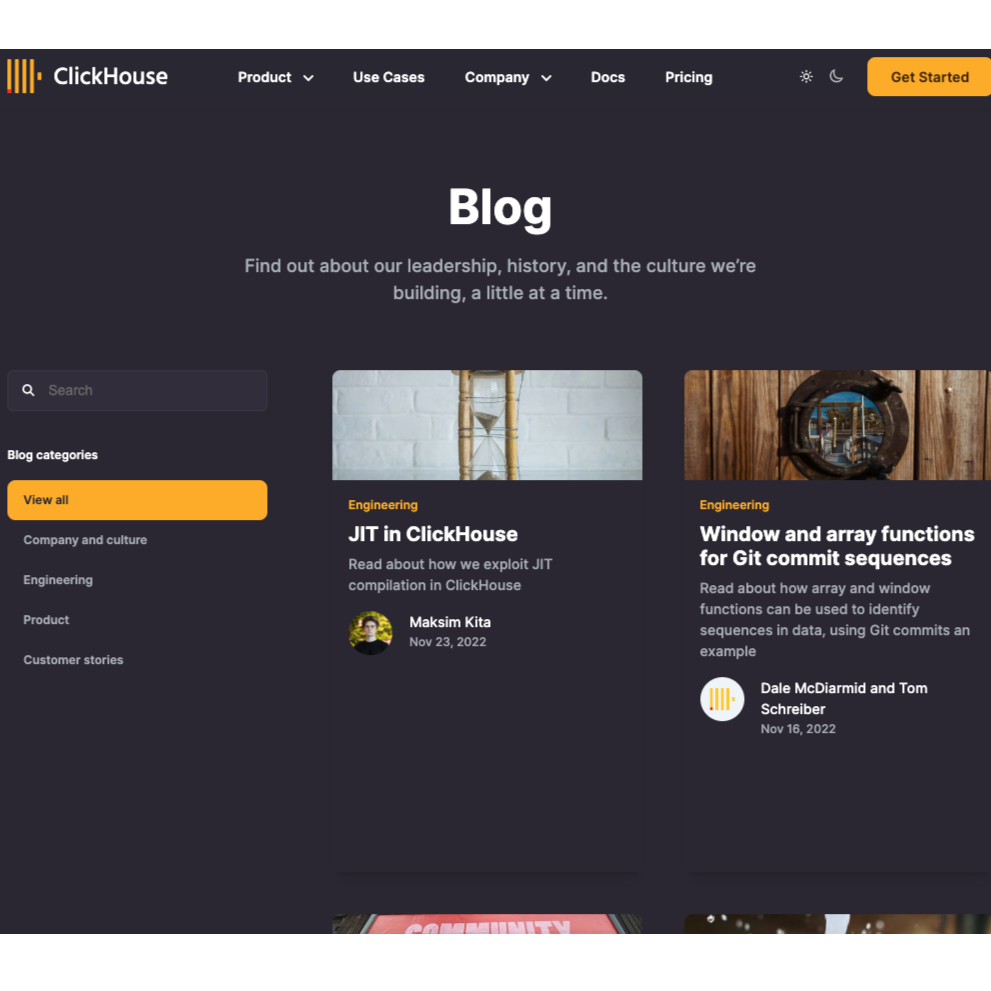 | Yandex blogs and clubs: ClickHouse
Also part of Yandex blogs, but with its own functionality and design. Full testing and release of the first versions of the blog. |
| 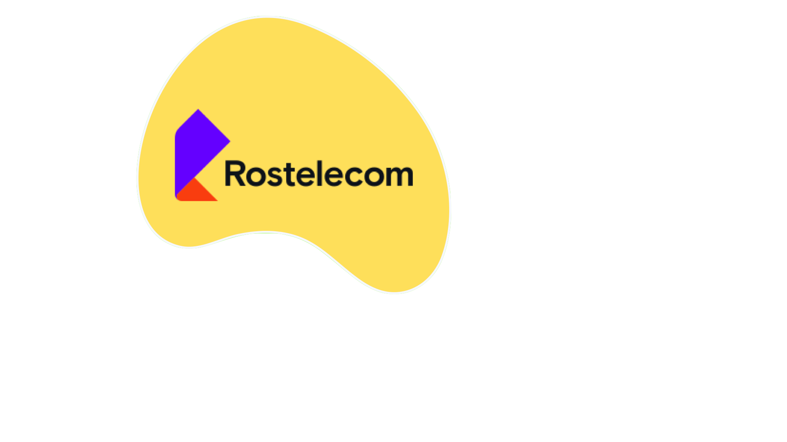 | Projects for Rostelecom
Rostelecom is Russia’s largest provider of digital services for a wide variety of consumers, households, private businesses, government and municipal authorities, and other telecom providers. I worked with some part of the big system: account, payment acceptance system, IPTV. I worked with payment of internet, mobile phones, money transfers between users. Also we did first version of IP TV, where we get money from users and transfer this money to Issuing bank and acquiring bank. I worked with SOAP API (our part of IP TV was without graphic interface), web and windows - application, postgres DB, console (grep logs, etc). I did test analyst and test design, wrote test documentation for acceptance tests and I conducted acceptance tests for customers (including for representatives of government agencies for the development of telecommunications systems in Russia). |
NDA projects The beginning of my career. I worked with three state projects that were conducted under the control of the government. Worked with a windows and a web applications. I wrote test documentation, manual testing, was the only tester on projects. I communicated with representatives of the customer, analyzed feedback from users. Deployed mongo DB for one of the parts of the product. |
Thanks for your attention :)